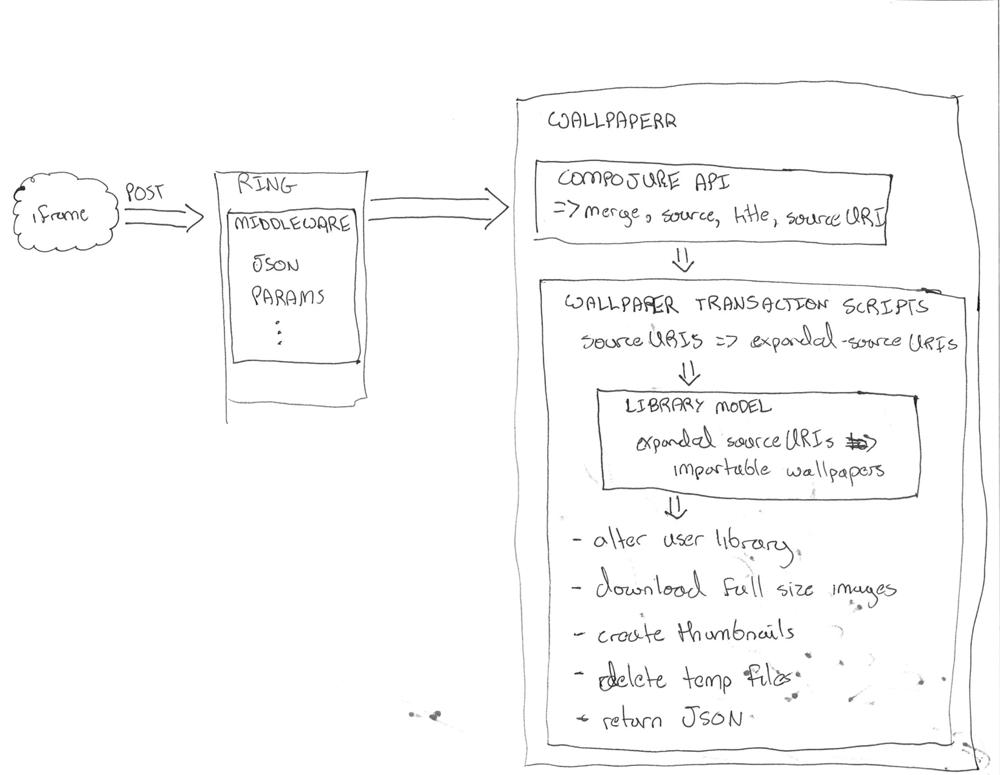

The Perils of Cross-Domain, Base64-Encoded, Clojure-Enabled Image Importing
Table of Contents
- 1 Introduction
- 2
POSTan Image to the server - 3 A better
POSTbody? - 4 Obtaining the JSON
- 5 Using the JSON
- 5.1 Basic Notes
- 5.2 The Back End Process
- 5.3 A Ring App
- 5.4 A Compojure Route
- 5.5 The Transaction Script
- 5.6 Send the Response
- 5.7 Detect what kind of wallpaper we're importing (support for single/multiple urls from the same wallpaper, multiple urls from disparate wallpapers, zip files (which get expanded to multiple disparate wallpapers), and base64 byte arrays which are decoded into images, again in single and disparate patterns) and then import them and add them to the users library (set via cookies).
- 5.8 Subsequently the xhr returns to the client and the client allows the user to rate and tag, sending PUT requests back to the server
- 6 But what about …
- 7 2 Paths
- 8 Client-Side Concerns
- 8.1 Base64 encoding
- 8.2 Cross-Domain Scripts (Same Origin Policy)
- 8.2.1 iframe communication via message posting
- 8.2.1.1 Each window can be the target of a message. If you post messages directly to the window, you don't need to be concerned with doubling up on handlers
- 8.2.1.2 You want to know who's talking to whom, so we include the target attribute.
- 8.2.1.3 Dispatch tables help us line a particular message up with a function.
- 8.2.1 iframe communication via message posting
- 8.3 I don't fully understand what the Same Origin Policy effects. In my case, I could load an image but the image's origin-clean flag was set to false and thus I couldn't actually obtain the image data.
- 9 Server-Side Concerns
- 10 Further experiments
1 Introduction
- Relay Network
- I have a problem
- Wallpaperrrr
1.1 slide notes notes
- Hello, I'm Tim Visher from Relay Network and I'd like to talk about the challenges of client-side encoding cross-origin image data and importing it to the server using javascript and clojure.
- What is Wallpaperrr? Wallpaperrr is a service intended to make it dead simple to import images to and manage your desktop wallpaper collection across multiple devices with differing screen resolutions and storage capacities. It aims to make it as easy as instapaper or evernote to save a wallpaper you've found on the Internet to your wallpaper collection and to control how that wallpaper appears on your devices.
- I was recently faced with the challenge of importing wallpaper images from thefoxisblack where I believed they had begun to require that certain cookies be set in order to allow their content to be downloaded. This destroyed my ability to send the urls back to the server and have the server download them on my users behalf (me). I've been thinking for a long time about how much of a dick move it is to hit the server twice (especially on a site like wallbase), once on the client and once on the server, in order to download a wallpaper. I'd much rather take the data the client already has and simply stream it, from the client, back to wallpaperrr. This seemed like the perfect opportunity to experiment with that approach, since it would seemingly be the only way I could get the data from thefoxisblack back to my server. What ensued was a lot of learning, and ultimately both a failure and a success.
2 POST an Image to the server
{
'title': 'foo',
'source': 'http://localhost/foo/',
'sourceUri': [
'http://localhost/foo_1920x1080.png',
'http://localhost/foo_1280x800.png'
]
}
2.1 notes notes
- Basic functionality is fine. Simply download each sourceUri on the back end
- Downsides
- Risk getting black-listed if you become popular
- Can be bad for the receiving server to be hit twice for the same image (wallbase.cc)
3 A better POST body?
{
'title': 'foo',
'source': 'http://localhost/foo/',
'sourceUri': [
'iVBORw0KGgoAAA…ggg==',
'aBGoAAt0wwgggg…axx=='
]
}
3.1 notes notes
- Advantages
- Get's me the image data directly from the client, which already has the data!
- Offloads downloading the image to the client, which saves me from getting black-listed
- Disadvantages
- Client's with low-bandwidth get hammered.
- Same Origin Policy!
4 Obtaining the JSON
- A bookmarklet
- A scraper
- An
iframe postMessage
4.1 The Process notes
- The Process
- Insert a script from Wallpaperrr into source site
- Scrape site for a title, source, and sourceUri(s)
onloadof the iframe, postgimme-datamessage towindow.parent- on
gimme-datamessage, postimport-datamessage back toevent.source- Actually, there's a fork here. We can either gather up the sourceURIs directly and do nothing else, or we can grab canvas data.
- on
import-datamessage,POSTimport-dataJSON back to server
- Things to remember
- Cross-domain script communication is verbotten.
- Scripts from one frame on one domain can't access another's frame's DOM
- You're stuck with messaging
4.1 The bookmarklet
var d=document, z=d.createElement('scr'+'ipt'), b=d.body; if(!b) { throw (0); } z.setAttribute('src','http://localhost:3000/js/import.js'); b.appendChild(z);
4.1.1 our bootstraperr notes
- responsible for scraping the site
- as it's loaded into the window's DOM directly, it has access to it
- responsible for inserting the iframe it will be talking to
4.2 The Scraper
wallpaperrrScraper.thefoxisblackScraper = function () { var aNodes, imageUrls, i; wallpaperrrScraper.title = document.querySelector('.post h2 a').textContent; aNodes = document.querySelectorAll('#wallpaper a'); imageUrls = []; for (i = 0; i < aNodes.length; i += 1) { imageUrls.push(aNodes[i].href); } wallpaperrrScraper.sourceUri = imageUrls; wallpaperrrScraper.merge = true; wallpaperrrScraper.insertIFrame(); };
4.2.1 The anatomy of a scraper notes
- I need 3 things: title, source, and the uris.
- Title is used as the title of the wallpaper in your library as well as the name of the wallpaper file on downloading it.
- Source is used to to link back to the source if others want to import that wallpaper.
- Source URIs are used to download the actual wallpapers. Alternatively to the source URIs, I could have a series of base64 strings.
4.3 The Scraper
wallpaperrrScraper.scraperDispatch = {
"thefoxisblack.com": wallpaperrrScraper.thefoxisblackScraper,
"10.0.0.*": wallpaperrrScraper.localhostScraper,
};
4.3.1 The dispatch table notes
- Dispatch tables are nice! I picked them up from Relay.
- Anyone can assoc into them, potentially opening up extensions without code redeployment.
- This particular stricture is nice because I can use regexs
4.4 The Scraper
// man, I want underscore! wallpaperrrScraper.matchingScraper = function (sitePattern) { var siteMatch; for (siteMatch in wallpaperrrScraper.scraperDispatch) { if (wallpaperrrScraper.scraperDispatch .hasOwnProperty(siteMatch)) { if (document.baseURI.match(sitePattern)) { return wallpaperrrScraper.scraperDispatch[siteMatch]; } } } };
4.4.1 Selecting a scraper notes
- If I were using underscore, this'd be a lot easier. Que Sera, Sera.
- Remember to use
hasOwnPropertyif you're iterating over an object's properties. - Passing a string to
matchworks nicely and allows us to use regexs.
4.5 The Scraper
wallpaperrrScraper.scrapeSite = function () { var siteScraper; siteScraper = wallpaperrrScraper.matchingScraper(); return siteScraper ? siteScraper() : wallpaperrrScraper.defaultScraper(); };
4.5.1 Calling the scraper notes
- We provide a default scraper.
- A saner language would let me get a key out of a map with a default.
4.6 The iframe
// import.js wallpaperrrScraper.insertIFrame = function () { var i, isrc; i = document.createElement('iframe'); i.setAttribute('id', 'addFrame'); i.setAttribute('src', 'http://localhost:3000/bookmarklet-import'); i.setAttribute('style', 'position: fixed; top: 10px; left: 10px; height: 200px; width: 200px; border: 5px solid #333; z-index: 12345;'); document.body.appendChild(i); i.focus(); };
4.6.1 Insert an iframe responsible for delivering that data to Wallpaperrr and then allowing the user to rate and tag it. notes
- We position it fixed at the top left so it looks nice and doesn't matter in what context it is inserted in.
- Love that
z-index
4.7 postMessage to site
wallpaperrrBookmarkletImport.doImport = function () { window.addEventListener( 'message', wallpaperrrBookmarkletImport.receiveMessage); window.parent.postMessage( { 'target': 'wallpaperSite', 'title': 'gimme-import-data' }, '*'); };
4.7.1 notes
4.8 postMessage to site
var messageHandlers = { 'gimme-import-data': postImportDataMessage };
4.9 postMessage to site
function handleMessage(e) { if ('wallpaperSite' !== e.data.target) { return false; } if (messageHandlers[e.data.title]) { return messageHandlers[e.data.title](e, e.data.payload); } } window.addEventListener('message', handleMessage);
4.10 postMessage to Wallpaperrr
var postImportDataMessage = function (e) { var payload; payload = { 'title': Wallpaperrr.Scraper.title, 'sourceUri': Wallpaperrr.Scraper.sourceUri, 'source': Wallpaperrr.Scraper.source, 'merge': Wallpaperrr.Scraper.merge }; e.source.postMessage(payload, '*'); };
4.11 A fork
- URIs
- Base64
4.12 What we've got
{
'title': 'foo',
'source': 'http://localhost/foo/',
'sourceUri': [
'http://localhost/foo_1920x1080.png',
'http://localhost/foo_1280x800.png'
]
}
4.12.1 notes notes
- Basic functionality is fine. Simply download each sourceUri on the back end
- Downsides
- Risk getting black-listed if you become popular
- Can be bad for the receiving server to be hit twice for the same image (wallbase.cc)
4.13 postMessage (sans Base64)
wallpaperrrBookmarkletImport.imgsLoaded = function (importData) { wallpaperrrBookmarkletImport.importRequest() .send(JSON.stringify(importData)); Wallpaperrr.Functions .showElement( document.getElementById('importing-header') ); };
4.13.1 Nothing much to do here notes
5 Using the JSON
- A Compojure
POSTRoute - Some Ring
middleware - Some Clojure =multimethod=s
- javax.imageio.ImageIO
- org.jdesktop.swingx.graphics.GraphicsUtilities
5.1 Basic Notes notes
- We support Zip Files, Straight URIS, and now Base64 Strings
- Middleware is cool (apparently comes from Rails?)
- Java's big. Has 'good' image libraries. Can throw out of memory errors when handling large files. This is something I think I'm going to pay someone else to do.
- Core
multimethods- Requests are handled by
multimethodsdispatching on theaccept-header - URIs are converted to
BufferedImage, dispatching on theclassof the input - Extensions are retrieved, dispatching on
class
- Requests are handled by
5.2 The Back End Process

5.2.1 The Back End Process notes
- The Process
POSTroute receives the request and destructures the JSON using middleware into function parameters.- The
POSTroute multimethod responsible for JSON accept headers takes over, passing the data through to the wallpaper model transaction script namespace - We expand the source uris, turning Zip files into multiple temporary files
- We transform the expanded source uris into importable wallpapers
{:wallpaper {:thumbnail-resolution {:extension "jpeg", :hash "f47818e3692786db6737a1b20236ce60", :width 1920, :height 1080}, :imported-at 1366813210080, :rating 0, :source "http://localhost:3000/…", :title "trees artwork - Wallpaper (#2756701) Wallbase", :tags #{"16:9" "1920x1080"}, :resolutions #{{:extension "jpeg", :hash "…", :width 1920, :height 1080}}} :source-uri #<File /var/folders/y7/…}- We have a couple of goals at this point.
- Title should be appropriate for being the name of a file on any file system.
- Resolutions and Aspect Ratios should be added as tags automatically
- We should have hashes of all the files so storage is shared accross all users
- Multiple source uris for the same logical 'wallpaper' should be merged together. Others should be kept separate.
- We have a couple of goals at this point.
- We alter the user's library ref, adding in each wallpaper.
- We save off the state of the library to the store
- We finally download each of the source-uris that made it through the import process into their correlated library-store-ids
- Then we thumbnail-ize them
- And finally delete any temporary files that were created (at this point only in the case of ZipFiles)
- Return the response map.
- We support Zip Files, Straight URIS, and now Base64 Strings
- Core
multimethods- Requests are handled by
multimethodsdispatching on theaccept-header - URIs are converted to
BufferedImage, dispatching on theclassof the input - Extensions are retrieved, dispatching on
class
- Requests are handled by
5.3 A Ring App
(def app (-> #'routes/main-routes … wrap-params … wrap-json-params))
5.3.1 Anatomy of a Ring App notes
- A Ring app is a function which takes a request in the form of a map and returns a map representing a response.
- This allows the use of higher order functions to construct 'middleware' which either transform the request or response on behalf of all inner routes.
5.4 A Compojure Route
(POST "/wallpaper" [merge title source sourceUri :as r] (let [{{{username :value} "username"} :cookies} r] (if username (letfn [(rep [s] (apply str (replace {\ , \+} s)))] (wallpaper-post-route r username title merge (rep source) (if (vector? sourceUri) (mapv rep sourceUri) sourceUri))) {:status 401})))
5.4.1 Anatomy of a Compojure route notes
- Compojure is a thin wrapper (started at around 200 SLOC) around consructing Ring handler functions.
- It provides a series of Macros which make it easy to declare what kind of request you're handling, the URL you expect to hit, and how you want to destructure the parameters that can come in.
5.5 The Transaction Script
- Expand the source URIs
- Transform source URIs to importable wallpaper
- Add importable wallpapers to user lib
- Download each to global file-store
- Add thumbnails for each to global file-stoer
- Delete temporary files
5.5.1 The Transaction Script bigcode
(defn import-wallpaper ([username store-base merge? title source source-uris] (let [->importable-wallpaper (partial lib/import-uri->importable-wallpaper username title source) ->sanitized-title (fn [wallpaper] (lib/sanitize-title username (:title wallpaper) (:thumbnail-resolution wallpaper))) source-uris (expand-source-uris source-uris) importable-wallpapers (doall (filter identity (map ->importable-wallpaper source-uris)))] (if (not (empty? importable-wallpapers)) (let [source-uris (map :source-uri importable-wallpapers) wallpapers (map :wallpaper importable-wallpapers) sanitized-titles (map ->sanitized-title wallpapers) shortest-sanitized-title (first (sort-by count sanitized-title)) sanitized-title shortest-sanitized-title unique-titles (lib/unique-titles username sanitized-title) wallpapers (map #(assoc %1 :title %2) wallpapers unique-titles) wallpapers (if merge? [(reduce merge-wallpapers wallpapers)] wallpapers)] (dorun (map (partial lib/add-library-wallpaper! username) wallpapers)) (store/put :file-system store-base (str "libraries/" username ".clj") (pr-str (into #{} (deref (lib/new-library username))))) (let [resolutions (map (comp :thumbnail-resolution :wallpaper) importable-wallpapers) library-object-ids (map #(lib/wallpaper->library-object-id %1 "library" %2) (map :wallpaper importable-wallpapers) resolutions) thumbnail-object-ids (map #(lib/wallpaper->thumbnail-object-id %1 "thumbnails" %2) (map :wallpaper importable-wallpapers) resolutions)] (dorun (map #(with-open [is (io/input-stream %2)] (store/put :file-system store-base %1 is)) library-object-ids source-uris)) (dorun (map (partial store/create-thumbnail :file-system store-base) library-object-ids thumbnail-object-ids))) (dorun (map fs/delete (filter fs/exists? (filter string? source-uris)))) wallpapers) []))))
5.5.1.1 The Transaction Script notes
- I'm creating functions in 4 different ways here. partial, comp, fn, and #(). Yeah, Clojure's functional alright.
5.5.2 Expanding the source URIs
(defn expand-source-uris [source-uris] (loop [expanded-source-uris #{} [source-uri & source-uris] (filter importable-uri? source-uris)] (if source-uri (cond (zipfile? source-uri) (recur expanded-source-uris (into source-uris (zipfile-uri->temp-files source-uri))) (url-exists? source-uri) (recur (conj expanded-source-uris (source-uri->temp-file source-uri)) source-uris) :drop-it (recur expanded-source-uris source-uris)) expanded-source-uris)))
5.5.3 Expanding the source URIs notes
- The loop/recur form is the only tail-call optimized form in Clojure. Useful if you can't get your job done using standard list-comprehensions or fold operations
- Clojure supports destructuring binds. Sequences are desructured with vectors, and maps are destructured with maps.
- In the case of a zipfile, we want to drop the original uri and replace it with many temporary files.
5.5.4 source-uris->importable-wallpaper
5.5.5 Add to the user's library
5.5.6 Download Each source URI
5.5.7 Thumbnailization
5.5.8 Delete the Temporary Files
5.5.9 Return the Map
5.6 Send the Response
5.7 Detect what kind of wallpaper we're importing (support for single/multiple urls from the same wallpaper, multiple urls from disparate wallpapers, zip files (which get expanded to multiple disparate wallpapers), and base64 byte arrays which are decoded into images, again in single and disparate patterns) and then import them and add them to the users library (set via cookies).
5.8 Subsequently the xhr returns to the client and the client allows the user to rate and tag, sending PUT requests back to the server
6 But what about …
{
'title': 'foo',
'source': 'http://localhost/foo/',
'sourceUri': [
'iVBORw0KGgoAAA…ggg==',
'aBGoAAt0wwgggg…axx=='
]
}
6.1 notes notes
- Disadvantages
- Client's with low-bandwidth get hammered.
- Same Origin Policy!
7 2 Paths
7.1 How to get Same Origin image data to the back end and imported.
7.1.1 Use HTML Canvas to get a datURL.
7.1.2 Send it to wallpaperrr via postMessage and JSON
7.1.3 Implement an extension and java-image multimethod for (class (byte-array 1))
7.1.3.1 Everything else just works
7.2 How to fix importing wallpaper from thefoxisblack.
7.2.1 Set your user-agent in the URLConnection
8 Client-Side Concerns
8.1 Base64 encoding
8.1.1 HTML Canvas, toDataURI
8.1.2 countdown latch
8.2 Cross-Domain Scripts (Same Origin Policy)
8.2.1 iframe communication via message posting
I effectively implemented a very simple message bus using JSON.